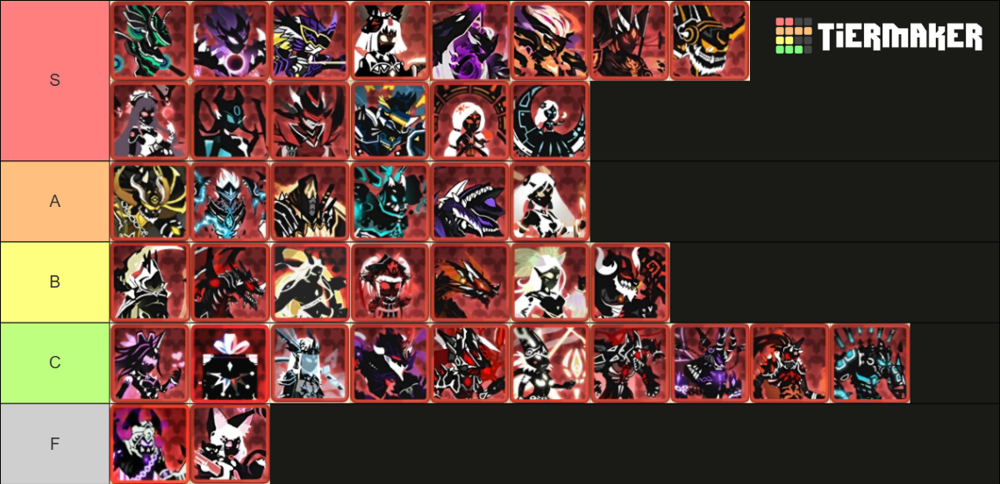
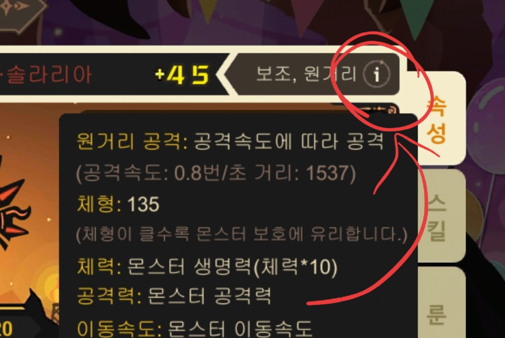

Sinsaeng
신생 세팅
신생은 재료의 종족 버프를 그대로 물려받는 핵심 전력입니다. 티어와 포지션별 공통 세팅, 세팅이 다른 예외 신생, 태초 성능 순위를 정리했습니다.
신생 티어표

| 등급 | 의미 |
|---|---|
| S | 모든 컨텐츠에서 사용 가능 |
| A | 특정 신생 카운터, S티어의 하위호환 |
| B | 특정 상황에서 S~A급 |
| C | 사용은 가능하지만 더 좋은 선택지가 많음 |
| F | TRASH |
주의. 망염은 최소 150렙부터 사용 가능 — 저렙 망염 = C.
태초 신생 성능 순위
태초는 초반 스타팅. 추천 순서는 리버스 > 리지 > 카오스이며, 편하게 하려면 리버스. 진화체 기준 성능 순위는 다음과 같습니다.
| 순위 | 신생 | 특징 |
|---|---|---|
| 1 | 솔라리아 | PVP · PVE 만능. 대체제가 없는 수준의 OP, 강력 추천. |
| 2 | 아이가스 | PVP 1티어덱 메인 파츠 |
| 3 | 브루엘 | 초반 스테이지 빠르게 미는 친구 |
| 4 | 루나리아 | — |
| 5 | 울티머스 | — |
| 6 | 글람 | — |
공통 세팅 (유전자 · 룬)
일부 신생을 제외하면 대부분 아래 포지션별 기본 세팅을 따릅니다.
약어 — 지=지속, 신=신속, 패=패기 / 공=공격
| 포지션 | 일반 유전자 | 왕유전자 | 일반 룬 | 특수 룬 |
|---|---|---|---|---|
| 근접 | 공격력 −10 / 체력 +120 | 일반룬효과 +10% | 지지신 / 지지패 / 지패신 / 지지지 | 환생 |
| 원거리 | 공격력 −10 / 체력 +120 (기본 체력 높거나 피뢰침 역할이면 체력 −30 / 공격력 +40) |
사거리 +15% (사거리 1500까지) · 일반룬효과 +10% | 공공지 / 공지지 / 공공공 | 폭주 / 야성 / 환생 |

세팅 예외 신생
아래 신생들은 위 공통 세팅과 다르게 맞춥니다.
| 구분 | 신생 | 메모 |
|---|---|---|
| 근접 예외 | 스크림 · 오페라 | 기본 근접 세팅과 다름 |
| 원거리 예외 | 희전완포 · 스퍼 | 기본 원거리 세팅과 다름 |
| 체력 −30 / 공격 +40 | 솔라 · 반 · 사룡 | 기본 체력이 높거나 피뢰침 역할로 쓸 때 |
레벨업 팁. 스테이크는 아껴두고, 45강 + 왕유변 9개를 EXP +20%로 바꾼 뒤 렙업할 때 사용해야 효율이 납니다.
개별 신생 세팅
이미지를 누르면 해당 몬스터의 설명·유전자 변이·룬·속성재조합이 창으로 뜹니다. 일부 주력 신생은 스킬까지 정리했습니다.
표기법
- 유전자 변이 — 공깎체(공−10/체+120), 체깎공(공+40/체−30), 일룬10(일반룬효과+10%), 사거리(사거리+15%), 체형±
- 룬 — 첫 글자 표기. 지·신·패·공·진·폭·폭발·견·환·흡·야·신성 / ( )는 대체 가능
- 속성재조합(5돌파) — @=수치 무관, 숫자↑=이상, ~120=최대 120 정도, 숫자↓=이하
태초 (6종)
신생 (33종)
출처. 슈진스 네이버 카페 자료(신생 티어표·세팅 가이드)를 개인 취미용 팬 공략으로 재구성했습니다.
티어·평가는 작성 시점 기준이며 패치에 따라 달라질 수 있습니다.